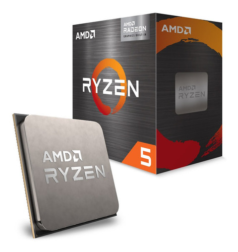

MICROPROCESADORES AMD (SOCKET AM4 y AM5)
Procesador AMD Ryzen 5 5600g con Radeon Vega integrado
El procesador AMD Ryzen™ 5 5600G incluye seis núcleos de CPU, una velocidad de reloj base de 3,9 GHz y siete núcleos de GPU. ¡Conoce las especificaciones, los detalles de la memoria y otras características principales!
Procesador AMD Ryzen 3 3200g con Radeon Vega integrado
El procesador AMD Ryzen 3 3200G Wraith Stealth (3,6 GHz / 4 GHz) se basa en la arquitectura Zen de 12 nm. Esta segunda generación de Ryzen con gráficos Radeon Vega 8 está equipada con 4 núcleos, frecuencias revisadas al alza con base 3,6 GHz y hasta 4 GHz, 4 MB de caché L3 y 65W de TDP.
Procesador AMD Ryzen 7 5700G + Graficos Radeon
El procesador AMD Ryzen™ 7 5700G incluye ocho núcleos de CPU, una velocidad de reloj base de 3,8 GHz y ocho núcleos de GPU. ¡Conoce las especificaciones, los detalles de la memoria y otras características principales!

Procesador AMD Ryzen 5 7600 + Radeon Graphics (Socket AM5)
El Ryzen 5 7600 tiene 6 núcleos y 12 hilos a una frecuencia de hasta 5,1 GHz en modo turbo, cuenta con 38 MB de caché total, su TDP es de 65 vatios y cuenta con una GPU integrada Radeon RDNA2 con 128 shaders.
Procesador AMD Ryzen 7 7700 + Radeon Graphics (Socket AM5)
Al igual que con el AMD Ryzen 9 7900, el AMD Ryzen 7 7700 juega con las frecuencias turbo y base para lograr sus objetivos de consumo TDP. Este procesador tiene prácticamente las mismas frecuencias turbo que su hermano, se queda 100MHz por debajo alcanzando un máximo de 5.3GHz, pero su frecuencia base, donde estabilizará si no tiene margen de acción como por refrigeración o entrada de potencia, se reduce de los 4.5GHz del AMD Ryzen 7 7700X hasta los 3.8GHz del Ryzen 7 7700.
Procesador AMD Ryzen 9 7900 + Radeon Graphics (Socket AM5)
El nuevo AMD Ryzen 9 7900 no está muy recortado en frecuencias, usa prácticamente las mismas que el poderoso Ryzen 9 7950X, aunque este último tiene 4 núcleos más y más cache de tercer nivel. Comparado con el Ryzen 9 7900X los recortes están únicamente en las frecuencias de overclock automático, que luego veremos cómo se traduce en rendimiento real. Por lo demás las prestaciones son idénticas, basados ambos en el Zen 4 con todos esos pilares basados en el numero cinco (DDR5, AM5, PCI Express 5.0, fabricación 5N, ....) que hacen de los procesadores de AMD los más potentes y capaces del mercado. El diseño chiplet de este modelo incluye dos CCDs, con seis núcleos por CCD, lo que le habilita los 64MB de cache de tercer nivel que solo disponen estos modelos Ryzen 9.
PLACAS DE VIDEO AMD
Placa De Video Amd Msi Radeon Rx 6600 Mech 2x 8gb Gddr6
La placa de video Radeon RX 6600 MECH 2X ofrece un diseño centrado en el rendimiento que mantiene lo esencial para realizar cualquier tarea. La combinación de una configuración de ventilador dual confiable colocada en un diseño industrial rígido permite que esta tarjeta gráfica de aspecto nítido se adapte a cualquier construcción.
Equipado con 8 GB de memoria GDDR6 avanzada para proporcionar un alto rendimiento de ancho de banda, lo que permite un rendimiento de 1080p para los juegos más exigentes de la actualidad.
Las tarjetas gráficas AMD Radeon RX 6000 Series cuentan con PCIe 4.0, con un rendimiento de 16 GT/s que permite dos veces el ancho de banda en comparación con PCIe 3.0.
Principales Características
* Fabricante: AMD
* Tamaño de la memoria: 8 GB
* Tipo de memoria gráfica: GDDR6
* Interfaz con la placa madre: PCI-Express 4.0
* Conectividad: HDMI, DisplayPort
Placa Video Amd Asrock Challenger Pro Radeon Rx6700xt 12gb
Tres ventiladores que proporcionan un gran rendimiento de refrigeración y hacen que su plataforma de juego se mantenga fresca. Está optimizado para ofrecer una excelente experiencia de juego con un diseño elegante y optimizado.
Presentamos las tarjetas gráficas AMD Radeon ™ RX 6700 Series, con la revolucionaria arquitectura AMD RDNA ™ 2, diseñada para brindar un rendimiento ultra alto, una resolución ultra alta y juegos visualmente impresionantes para todos. Estamos
impulsando la próxima generación de juegos.
Principales Características
* Chip gráfico AMD Radeon ™ RX 6700 XT
* Reloj del juego: 2474 MH.
* Memoria 12GB GDDR6.
* Bus estándar PCI® Express 4.0 x16.
* Resolución Resolución máxima digital: 7680x4320.
Placa de Vídeo ASRock Radeon RX 6800 XT Phantom Gaming D 16GB GDDR6
La tarjeta gráfica AMD Radeon™ RX 6800XT, con la tecnología de la arquitectura AMD RDNA™ 2, que ofrece 72 potentes unidades de cómputo avanzado, 128 MB de la última AMD Infinity Cache y 16 GB de memoria GDDR6 dedicada, está diseñada para ofrecer velocidades de cuadro ultra altas. resolución y juegos en resolución 4K de alto nivel.
Principales Características
* Marca: ASRock
* Modelo: Radeon RX 6800 XT Phantom Gaming D 16G OC
* Motor gráfico: Tarjeta gráfica AMD Radeon™ RX 6800 XT
* Patrón de autobús: PCI® Express 4.0 x16
* DirectX: 12 último
* OpenGL: 4.6
* Memoria: GDDR6 16GB
* Reloj de la memoria: 16 Gbps
* Máxima resolución digital: 7680x4320
STOCK DISPONIBLE
- Procesadores con socket AM4 en stock:
- Procesador Ryzen 5 5600g con Radeon Vega Integrado
- Procesador Ryzen 3 3200g con Radeon Vega Integrado
- Procesador Ryzen 7 5700g con Graficos Radeon Integrados
- Procesadores con socket AM5 en stock:
- Procesador AMD Ryzen 5 7600 - 6 Núcleos / 12 Threads 5.1Ghz + Radeon Graphics
- Procesador AMD Ryzen 7 7700 - 8 Núcleos / 16 Threads 5.3Ghz + Radeon Graphics
- Procesador AMD Ryzen 9 7900 - 12 Núcleos / 24 Threads 5.4Ghz + Radeon Graphics
CARACTERISTICAS PRINCIPALES MICROPROCESADORES
| Ryzen 5 5600G | 6 Nucleos - 12 hilos - 3.9Ghz |
|---|---|
| Ryzen 3 3200G | 4 Nucleos - 4 Hilos - 3.6Ghz |
| Ryzen 7 5700G | 8 Nucleos - 16 Hilos - 3.8Ghz |
| Ryzen 5 7600 AM5 | 6 Nucleos - 12 hilos - 5.16Ghz |
| Ryzen 3 7700 AM5 | 8 Nucleos - 16 hilos - 5.3Ghz |
| Ryzen 9 7900 AM5 | 12 Nucleos - 24 hilos - 5.4Ghz |